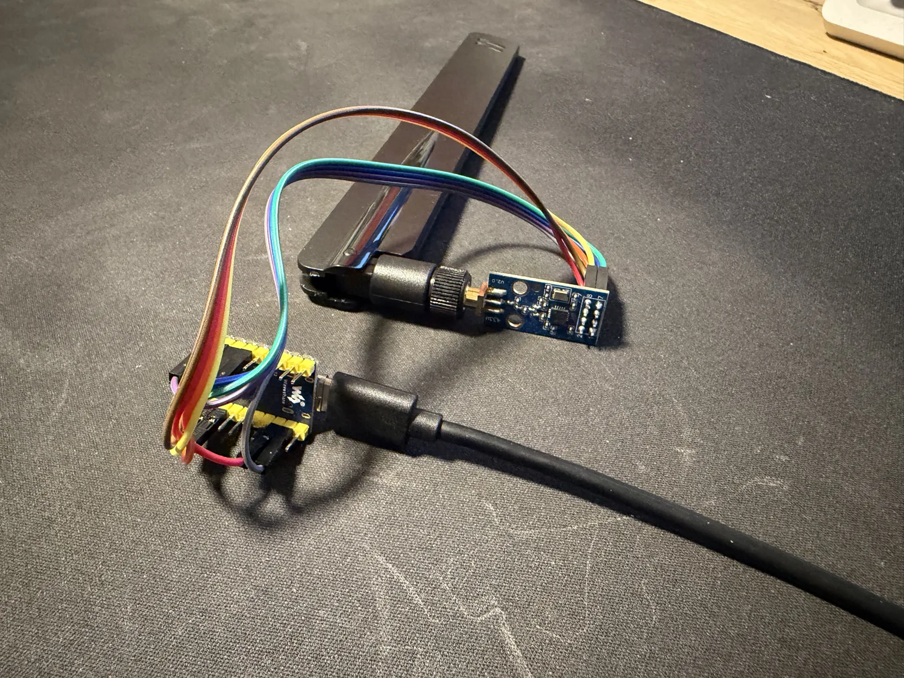
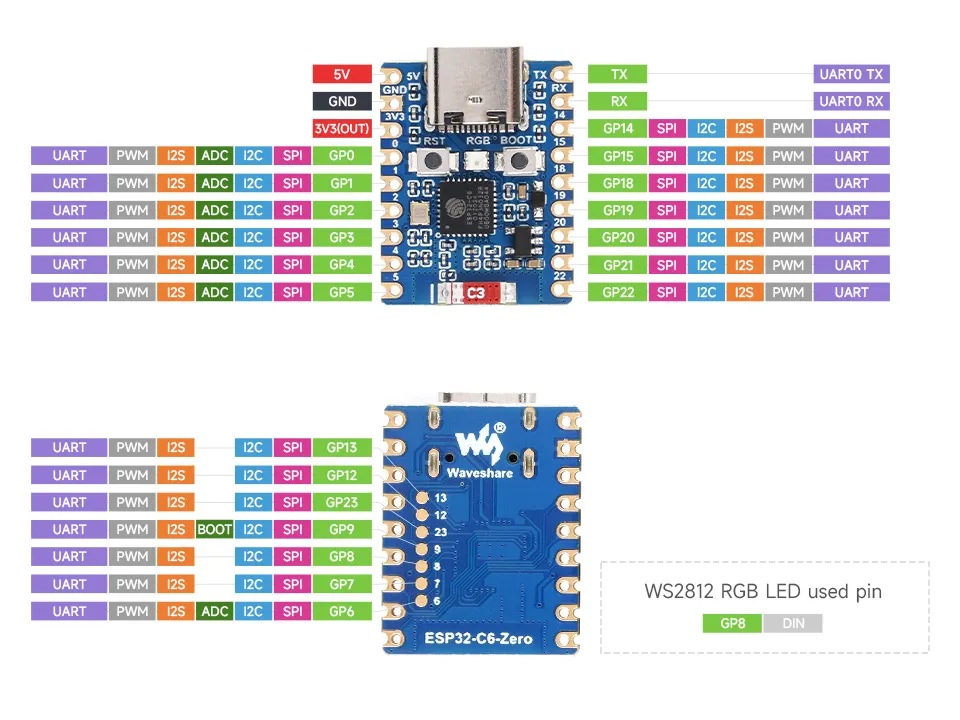
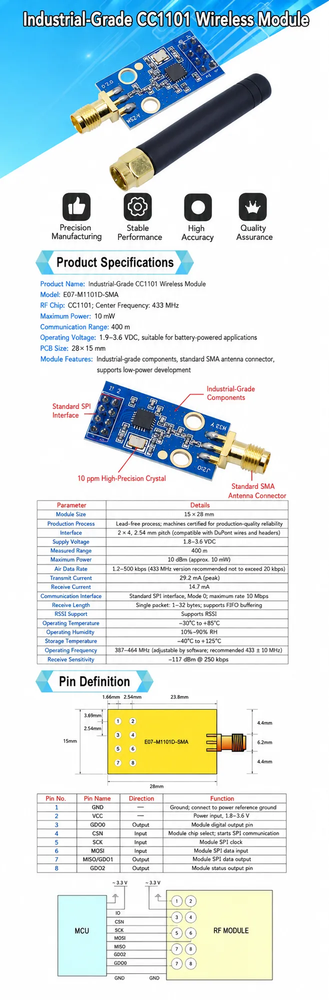

Hardware
Waveshare ESP32-C6-Zero (native USB-C) wired to an E07-M1101D (CC1101, 433 MHz) radio. The E07 runs at 3.3 V — never 5 V. Attach a 433 MHz antenna to the E07.


| E07 pin | Signal | ESP32-C6-Zero |
|---|---|---|
| 1 · GND | Ground | GND |
| 2 · VCC | 3.3 V power | 3V3(OUT) |
| 3 · GDO0 | TX data out | GP22 |
| 4 · CSN | SPI chip select | GP21 |
| 5 · SCK | SPI clock | GP19 |
| 6 · MOSI | SPI data in | GP4 |
| 7 · MISO/GDO1 | SPI data out | GP20 |
| 8 · GDO2 | RX data out | GP5 |
Both GDO lines are wired: GDO0 (GP22) transmits and GDO2 (GP5) receives — receive is what lets the board hear your existing remotes for discovery and keep rolling codes in sync. GP4/GP5 are the external-JTAG pins, free here because the console runs over the internal USB-Serial-JTAG.
Default carrier 433.42 MHz — a single device-wide radio setting,
tunable from the setup page. A real crystal drifts, so sweep 433.36–433.44 if a
motor stays silent.
Reference: E07-M1101D-SMA manufacturer datasheet (pin definition and MCU wiring).
